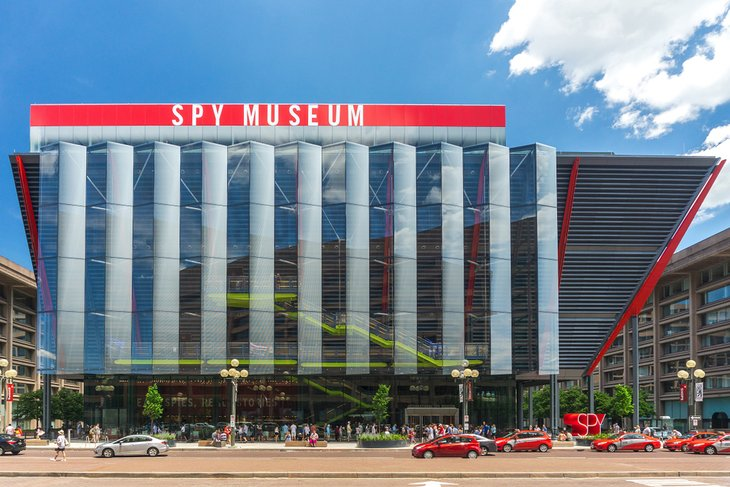

| Washington, DC, U.S.A | ||
|---|---|---|

|
I like to visit lincoln Memorial because it was near the school and it was famous in DC. | Read more |
| Washington, DC, U.S.A | ||
| I like to vist Jefferson Memorial and Tidal Basin because the design for the domed white memorial to Thomas Jefferson | Read more | |
| Washington, DC, U.S.A | ||
|  | I like International Spy Museum because it was the place for 007 wannabes, the museum covers the techniques, technology, history, and contemporary role of espionage. | Read more |